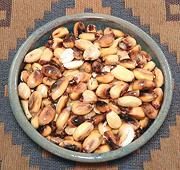

|
Cuzco Toasted CornPeru - Maiz Cancha Amarillo | ||||
| Makes: Effort: Sched: DoAhead: |
1-1/4 cup * 6 min Yes |
A very simple snack. The corn does not puff up like Popcorn, but it does become soft enough to eat as a salted snack. See also Comments. | |||
|
1 1 ar |
c t |
Cuzco Corn (1) Oil Salt |
Make - (6 min)
|